Awesome stuff to see
All things nerd! And some other things, let's give some highlights!
Are you a game nerd? Well welcome to a bit of heaven on earth
Arcades
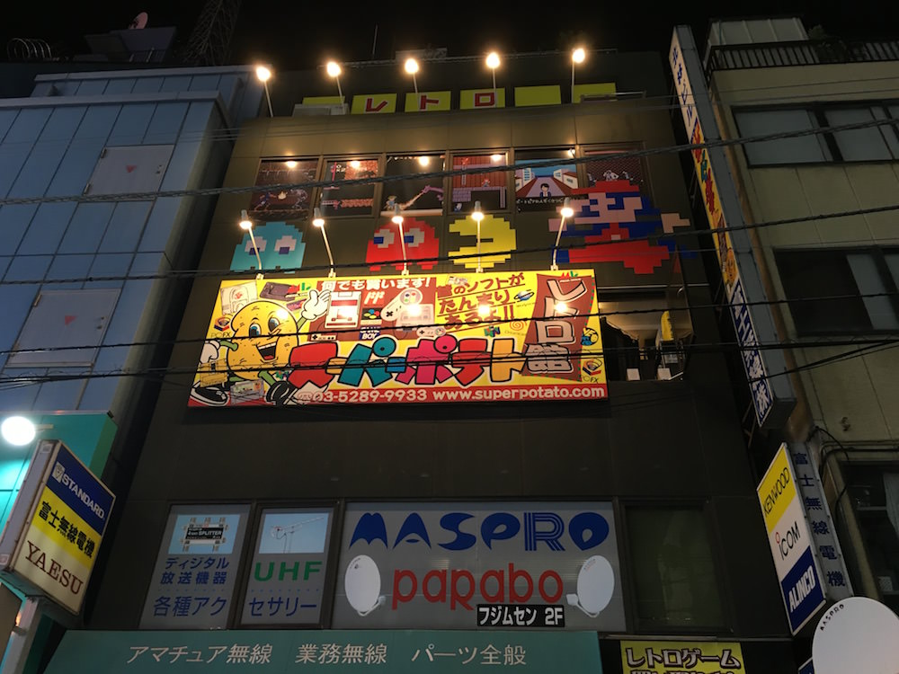
What is a gamer without an arcade? Check out the most critcally acclaimed arcade in existence with retro classics dating back to the 70s, with 3 floors of button mashing, combo breaking, joystick slapping madness.
Nintendo's Rural Culture Retreat
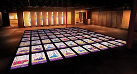
What gamer doesn't know Nintendo? If your a 90's kid lke me then Nintendo is probably what first brought you into the world of being a gamer. So of course I'm gonna recommend you go see the newly founded in 2006 musuem funded by Nintendo near the Kyoto Prefecture. The museum isn't focused around the video game makers though, it's main feature is "Hyakunin Isshu" a poetry based card game with 100 poems. Giant tiles are spread across the floor and players aim to match poem cards before their opponent. It pays homage to history and has a super modern look and feel as the panes are full interactive and can even be manipulated remotely with customized Nintendo DS handhelds. There is also a rock garden, tons of experimental interactive game tech,and other games making it well worth the trip.
Okay, so maybe your not a gamer, that's fine there's still some awesome stuff to see
Akihabara Crossfield
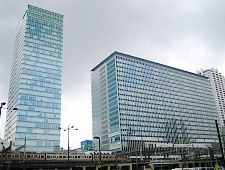
The crossfield complex has a ton of stuff in it resturants, stores, conference rooms and showcases. Going on a tour and finding some good photo-ops should make your trip well worth.
Cat Cafe
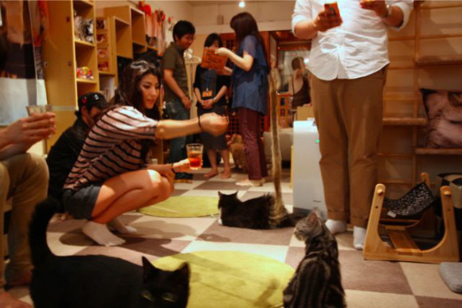
Because who doesn't like the little kitty-witty! Grab a snack and hang with these adorable little fuzzy critters
Weapon Store
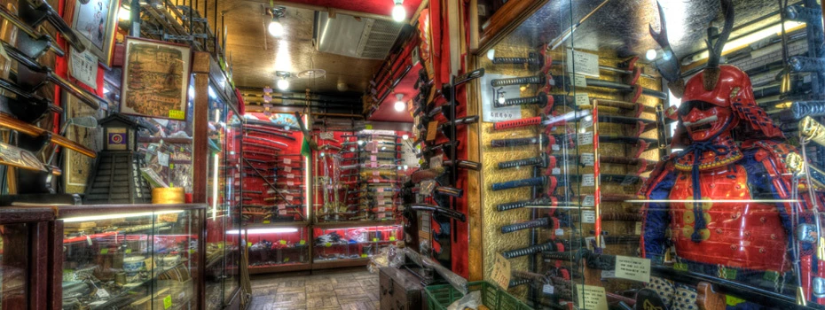
And of course who could leave without some glorious nippon steel? Check out the weapons district for various authentic swords, armor and shuriken. Try them on, take some pics, just don't lose any fingers.
Don't just sight see, get in the game
If you're in Akihabara there's a ton to do so grab your coffee, your snacks and get ready for a long haul. Because from binging anime to internet cafes we are gonna break down the hotspots so you that you know where to be. Major stuff to do breaks down into the following 3 categories:
- Video Game Stuff
- Computer Stuff
- Otaku Stuff
Now before you start, yes technically all of the above are Otaku types of hobbies but no two snowflakes are the same. These 3 main groups of hobbies have the biggest range of shops and centers catering to that group. So looking at this objectively limiting our scope in a simple manner helps solve the TSP(traveling salesman problem) or in this case. The TOP(traveling otaku problem)
Hope you brought your wallet
Gamers
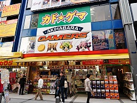
Gamers sells a wide range of anime and manga related goods including movies, video games, CDs, stationery, software and character goods.
Shooting Bar EA
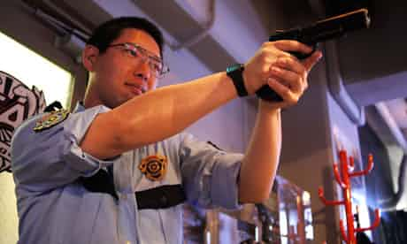
Shooting Bar EA is a BB gun target range and bar ... yup, drink up, and shoot things! Once you've signed the obligatory rules and regs contract and ventured inside, the bar and cosy tables are surrounded by BB gun replicas hanging on the walls – Glocks, Sig Sauers, Colts, and even a Samurai Edge, the handgun used in the Resident Evil video games. The partitioned shooting range is outfitted with a touch panel to control the targets' location, and guns with three magazines of BBs or rifles with two are available to rent. Goggles are provided. So check it out!
Hey!
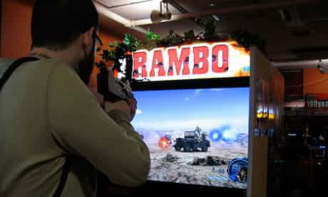
Feeling competitive? Short for Hirose Entertainment Yard, Hey! is a must-stop in Akihabara for arcade game lovers. Rows and rows of arcade machines flicker under the fluorescent lights, and you'll need guts of steel and quick reflexes on the arcade's second floor, dedicated to crazy "bullet hell" shoot-'em-up games like Mushihimesama, in which endless streams of projectiles are fired at players. The third floor is filled with fighting games, and the regulars are some of the best gamers in Japan. Hey! isn't where people go to practice. It's where they go to show off.
Hope you remember how far you have to carry all this stuff
Yodobashi Camera: The Leisure Hive
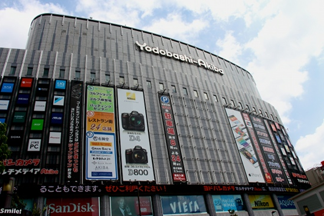
Ground Zero for tech-heads everywhere. Any gadget, mobile tech, camera, computer can be found in this massive 9 floor retail center. Complete with standard and internet cafes within.
Tsukimo Robot Kingdom
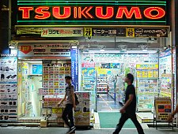
What's a computer adventure without robots? Check out Tsukimo for all things microprocessing, robotics, DIY drone tech and all beeping and booping goodness!
Hope you brought your backpack
Mandarake
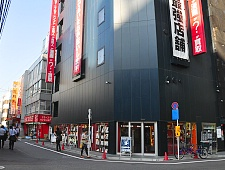
Mandarake, the self described largest manga and anime shop in the world, operates a large branch in Akihabara. Specializing in pre-owned goods, it is a good place to find rare and collectible manga, figurines, dolls, posters, CDs, toys and other types of manga related goods.
Gundam Cafe
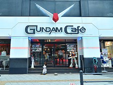
The Gundam Cafe is themed after the extremely popular Mobile Suit Gundam anime series. The cafe serves gundam themed dishes and is decorated with art and themes from the series. A gift shop is attached and sells character goods and souvenirs.
Cure Maid Cafe
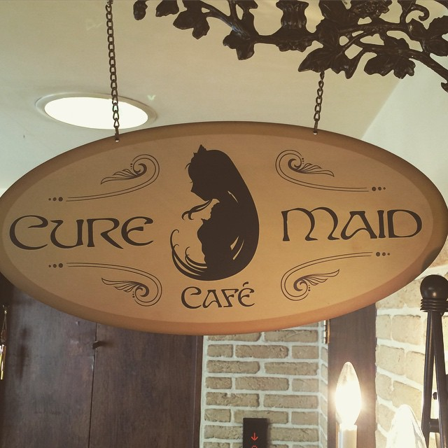
It’s said to be the first Maid cafe ever open in Akihabara as well as all over Japan. Cure Maid Cafe has its own very old style, make you feel like you are enjoying a tea time party in Victorian Era. The menu, which also has slight European taste, with seasonal changes and weekly special dishes. One of the best thing here is the variety of the tea and desserts, you should definitely try the Earl Grey tea!